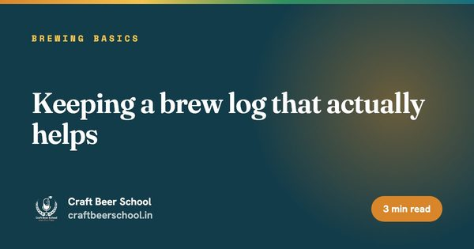
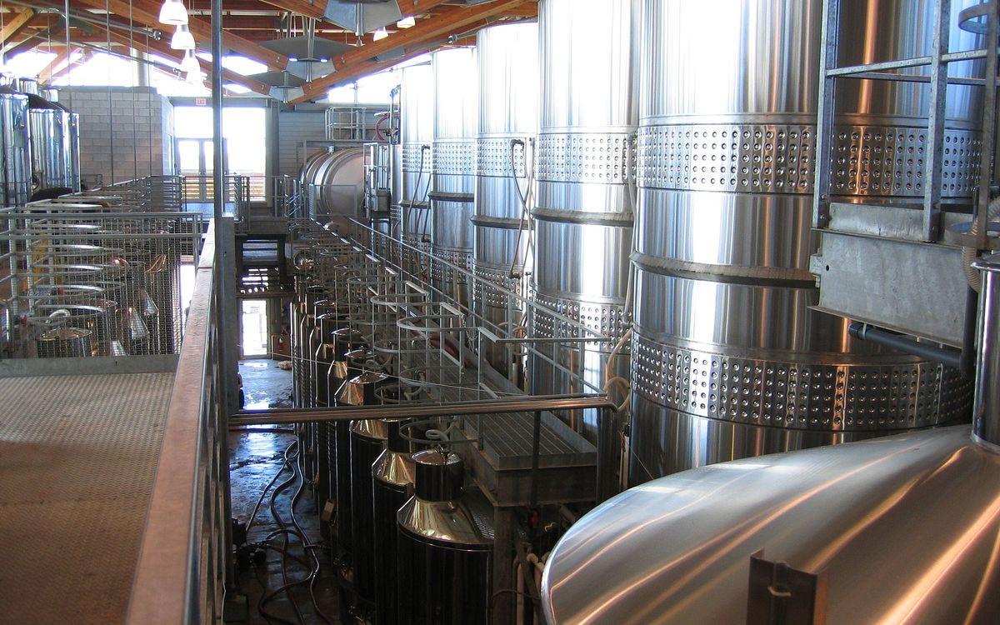

Brewing basics
Keeping a brew log that actually helps
Memory is a poor substitute for a written record when you are trying to work out why one batch was better than the last.

2 weeks. Two live sessions every weekend and one assignment a week.
Assignment: Turn last month's paper brew sheets into one digital log and find three things you did not know.
Assignment: Build your weekly dashboard and write your 90-day digital plan.
Want the full flight? All seventeen courses together run to 51 weeks, and you choose your package when you enrol. Compare all seventeen courses, and read the refund policy before you pay.
Cohorts cap at 20. Enrol now or ask us on WhatsApp.